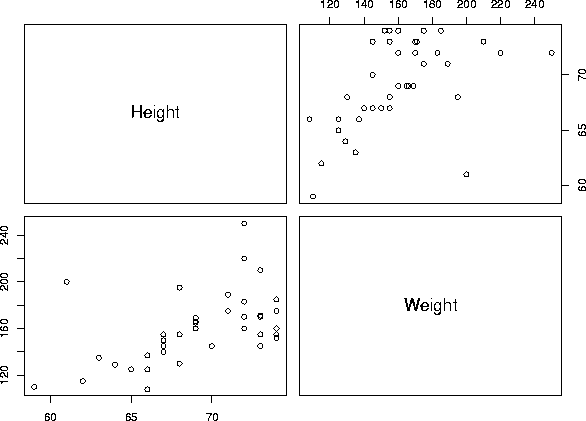

Correlation between height and weight:
Height 1.0000000 Weight 0.5379353
Summary statistics:
Height Weight Min. : 59.00 Min. : 108.0 1st Qu.:67.00 1st Qu.:142.5 Median :69.00 Median :155.0 Mean : 69.12 Mean : 159.9 3rd Qu.:72.50 3rd Qu.:173.0 Max. : 74.00 Max. : 250.0 Std Dev: 3.98 Std Dev: 28.9
Scatterplot:

WebStat:
XploRe:
hw#1
library("XploRe")
x = readm("user")
z = x.double[ , 3]
library ("plot")
plothist(z)
plotbox(z)
library("XploRe")
x = readm("user")
z = x.double[ , 5]
library ("plot")
plothist(z)
plotbox(z)
hw#2
library("XploRe")
x = readm("user")
y = x.double[ , 5|4]
y1 =3D y[ , 1]
y2 =3D y[ , 2]
library("stats")
{b, bse, bstan, bpval} =3D linreg(y1, y2)
library("plot")
plot(y)
regy=3Dgrlinreg(y)
plot(y, regy)
After loading the data into Statlets, I changed the outlier 103 to 67 inches then did a t-test.
95% confidence interval: [68.3,70.8] H0: mu=68", we do reject.
Another reason: Not only do we get this result from the applet, we know we will reject because 68.0 does not fall within this interval. Would not reject for any value of mu that is within the interval [68.3,70.8]
Roxanne Drachenberg
(435) 752-8375
roxanned@pcu.net